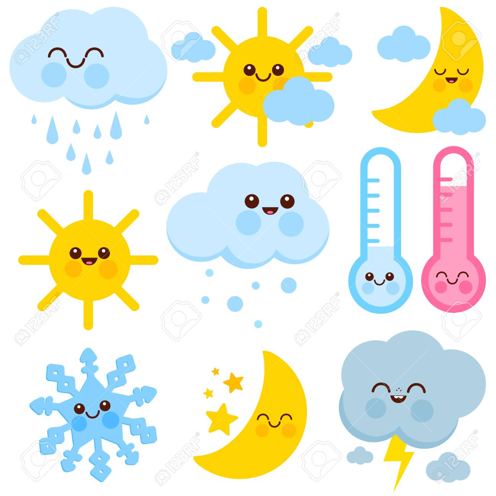

Welcome to Weather Condition Documentation:¶
Description¶
This is the Weather bot. Want to know what’s the weather like in your city? Ping me the name of the city, and I will tell you the current temperature and max/minimum temperature for the day.